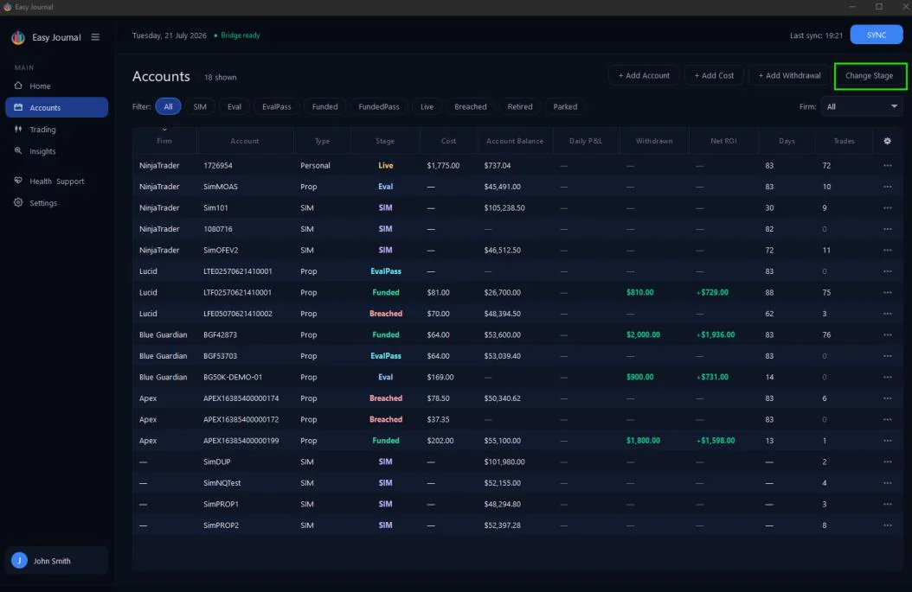
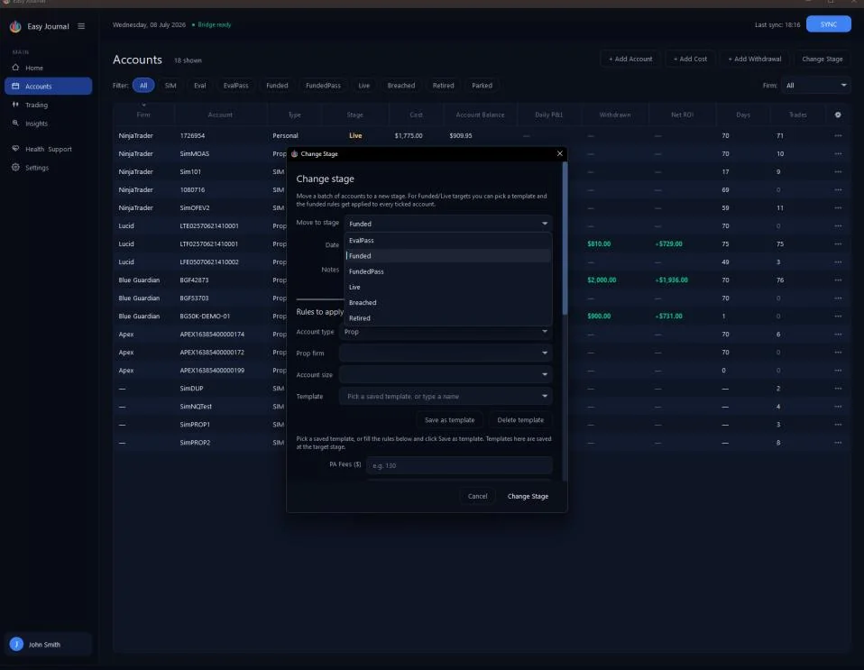
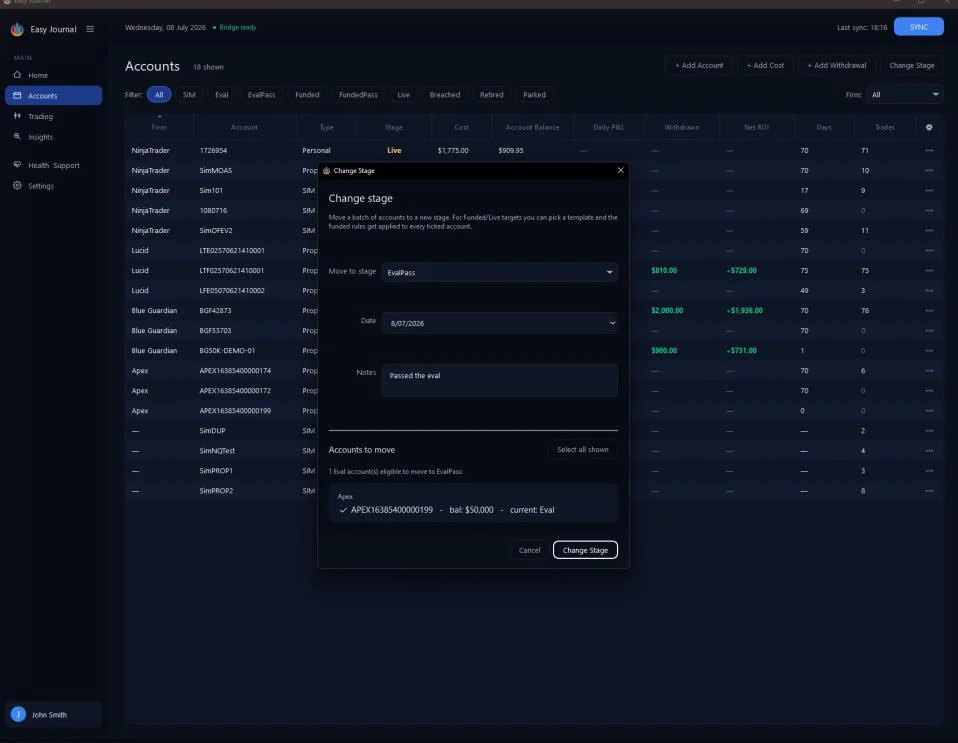
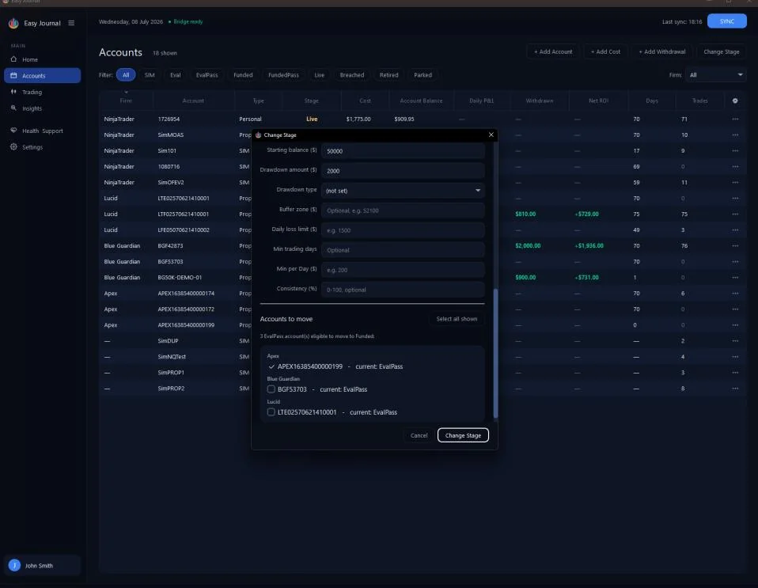
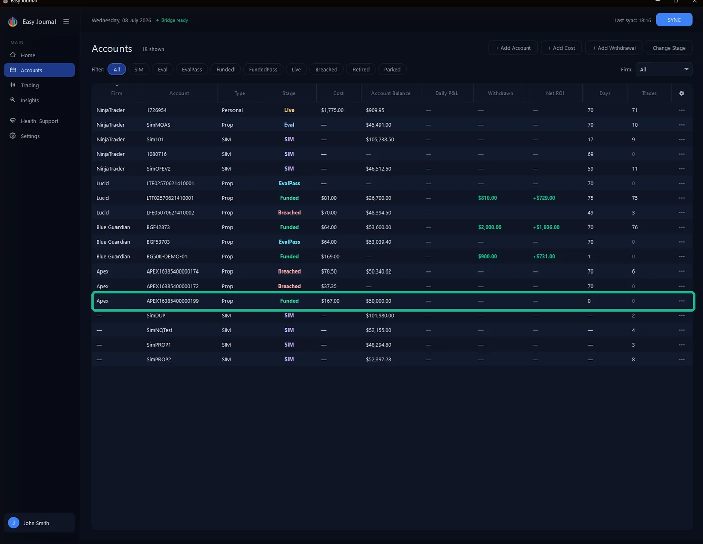
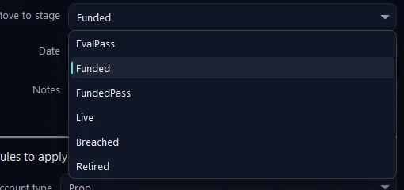
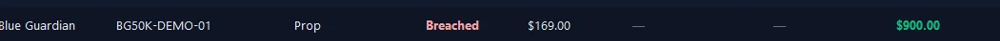
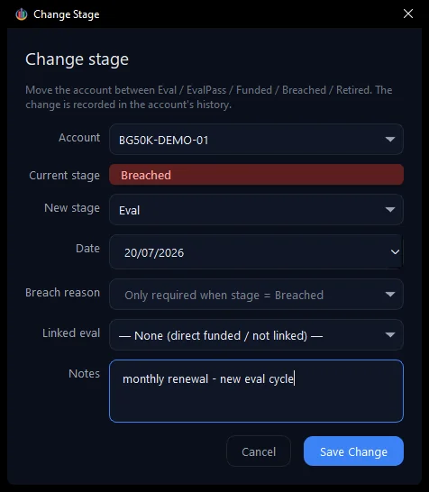
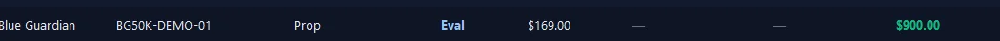

Move accounts through their life story: Eval, EvalPass, Funded, Live - or Breached / Retired. In this walkthrough we pass a real eval and then take the account to Funded. Every account has a stage, and the stage drives everything downstream: which rules apply, which filters it appears under, how commissions are attributed. The Journal also enforces the natural order - for example, only EvalPass accounts are offered when you move accounts to Funded.
1. Open Accounts in the left sidebar, then click Change Stage at the top right.

2. Pick the new stage from the Move to stage list. Our account APEX16385400000199 just passed its eval, so we picked EvalPass.

3. Set the date, write a note (the account's history reads like a story later), and tick the account(s) to move. Only eligible accounts are listed - ours appears because it is at Eval and we are moving to EvalPass.

4. Click Change Stage.
Moving to Funded or Live When the target stage is Funded or Live, the window grows a Rules to apply section: pick a saved template or fill the funded rules by hand - profit split, withdrawal target, starting balance, drawdown - and record any activation/PA fee in the same step. Save as template keeps it for next time. We moved our account EvalPass to Funded with a 90% split and a $4,100 withdrawal target:


After the second move - the account is Funded, with the funded rules applied.
Every move is written into the account's lifecycle history (Journal tab), so the whole journey stays traceable. Tip: Pass three evals the same day? Tick all three and move them in one go - the date, note and rules apply to the whole batch.
Bringing a breached account back A breach is not always the end of the road. A common case: a monthly-renewal prop account. You breach, then renew the subscription — and because the firm keeps the same account ID, the Journal keeps the same row (there is no "new" account and no (new) tag). You just need to restart its evaluation by moving it back to Eval. Here is the catch. The bulk Change Stage tool — the button above the Accounts list — can move a batch of accounts to EvalPass, Funded, FundedPass, Live, Breached or Retired, but it deliberately cannot move an account back to Eval:

The per-account Change stage window can. So we use that. First, the account after it breached — we recorded the reason as DD limit:

1. On the breached account’s row, click ••• → Change stage… 2. Set New stage to Eval, add a note such as "monthly renewal - new eval cycle", and click Save Change.

The account is back at Eval, ready for the fresh cycle — same row, same history, just a new stage:

full story — you can always see that this account breached on a DD limit and was renewed.